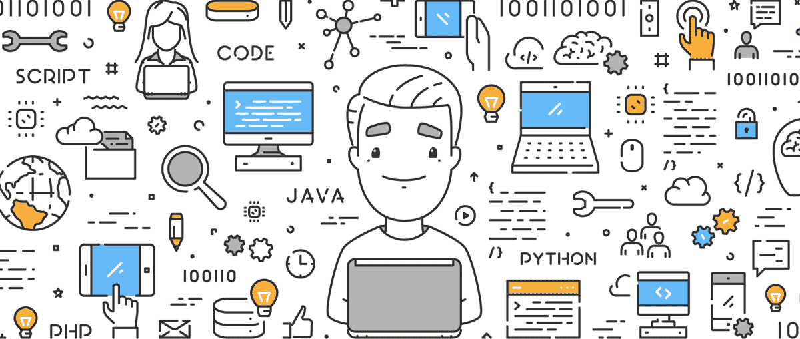

Which programming language should I learn first? This is the question that consumes the thoughts of beginners that are entering the world of computer programming. While in reality it doesn't really matter how you start, we are all too familiar with your obsession of finding the language that best fits your skillset and ambitions.
The most important step is simply getting started, you will need to know at least a few languages to understand the underlying concepts. Ok, but what languages to start with you ask? That is what we are here for. Take our short survey to help point you in the right direction. Our time-tested algorithm has guided some of the most distinguished individuals in modern-day programming; Brandan Eich, Guido van Rossum, and Collin Chapman to name just a few. Follow in their footsteps to get started now.
